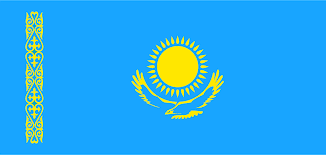
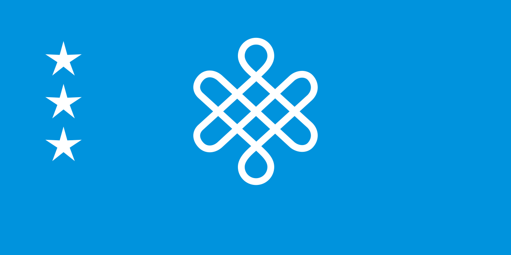
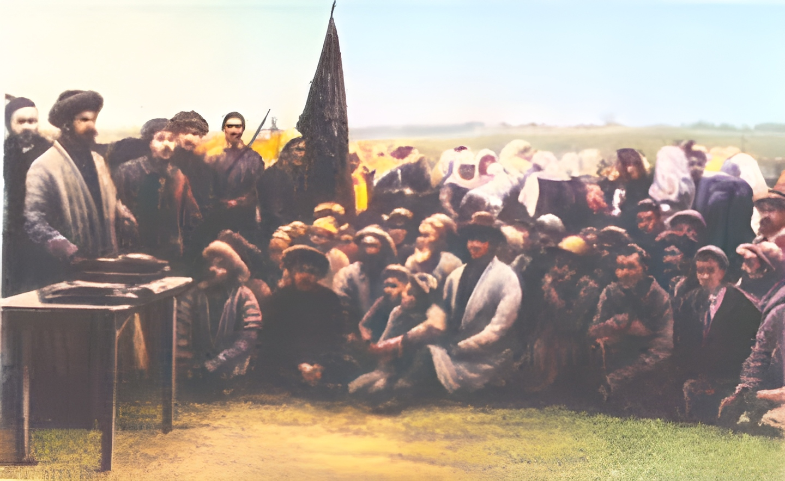
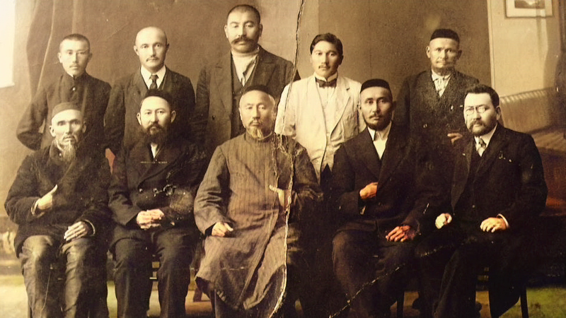
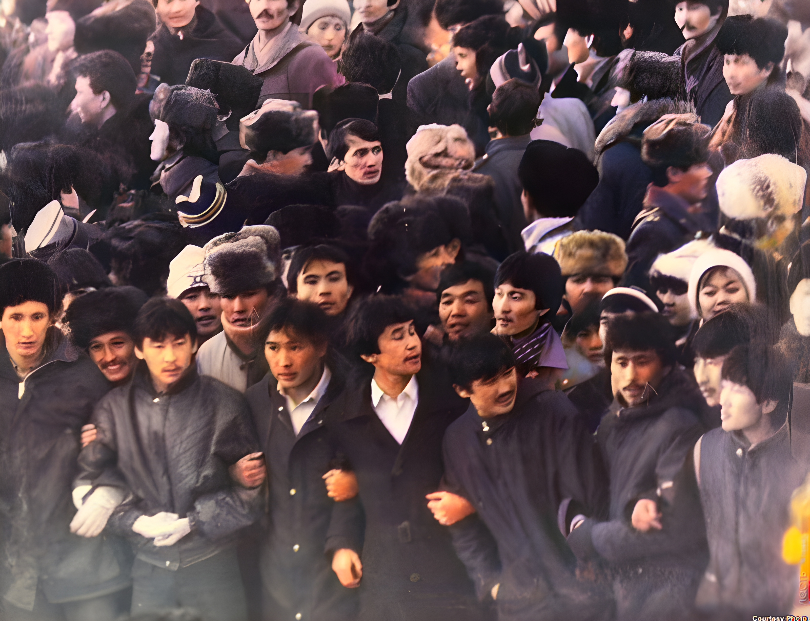

Цель
Выявить историческую значимость провозглашения суверенитета и его роль в формировании современной государственности Казахстана.
Республика Казахстан
Провозглашение независимости Республики Казахстан — не просто политический акт, а результат многовекового стремления народа к самоопределению. В этой работе показан путь от исторических истоков государственности до стратегического видения развития до 2050 года.

В этом разделе кратко сформулированы цель, гипотеза и методы, использованные в работе.
Выявить историческую значимость провозглашения суверенитета и его роль в формировании современной государственности Казахстана.
Суверенитет стал базовым фактором формирования устойчивой государственности и модернизации страны.
Путь к суверенитету не был случайным — он стал закономерным итогом исторического развития и многолетнего стремления к самоопределению.
Первый этап формирования элементов независимой власти и политической организации на территории степи.

Усиление борьбы против колониальной политики и рост национального самосознания.

Деятельность движения «Алаш», которое выдвигало идеи автономии и политического самоопределения.

Отсутствие полной самостоятельности, но появление условий для суверенитета в период перестройки: изменения в политической и общественной жизни.

Независимость 1991 года стала результатом длительного исторического пути, в котором накапливались идеи, опыт и предпосылки государственности.
Становление современного Казахстана закрепили два ключевых документа, определивших правовой и политический фундамент независимого государства.
Впервые утвердила верховенство республиканских законов над союзными и закрепила право собственности на природные ресурсы.
Казахстан двигался к независимости осторожно из‑за высокой интеграции в экономику СССР.
Окончательно закрепил Казахстан как самостоятельный субъект международного права, обеспечив территориальную целостность и собственную систему власти.
Казахстан был одной из последних республик, принявших такое решение — «взвешенный подход».
Эти документы дали старт институциональному оформлению государства: от законов и органов власти до экономической самостоятельности.
За десятилетия независимости Казахстан добился заметных результатов в международной, экономической и культурной сферах.
Дальше: настоящий Казахстан →Современный Казахстан сочетает политическую устойчивость, международную активность и экономическую модернизацию. Это этап, где суверенитет уже работает как практическая основа развития государства.
Настоящий Казахстан — это переход от закрепления независимости к устойчивому развитию, где одновременно укрепляются институты, экономика и национальная идентичность.
Перейти к разделу о будущем →На текущем этапе развития важны одновременно трезвая оценка внутренних факторов (SWOT) и долгосрочные приоритеты стратегий «Казахстан–2050».
Богатые ресурсы, стабильность и мирный переход к независимости.
Зависимость от сырьевого сектора и инфляционные риски.
Развитие IT-сектора, привлечение инвестиций и укрепление культуры.
Колебания мировых цен на ресурсы и внешние политические факторы.
Переход от сырьевой модели к высокотехнологичному производству и устойчивому росту.
Внедрение ИИ, развитие электронного правительства и поддержка стартап-экосистемы.
Расширение возобновляемых источников энергии и рациональное использование ресурсов.
Модернизация образования и подготовка конкурентоспособных специалистов.
Долгосрочные ориентиры развития закреплены в стратегии «Казахстан–2050».
Баланс между экономическим ростом, технологичностью и национальной идентичностью.
Был проведён опрос 30 учащихся 7–11 классов. Результаты:
Добавьте другие источники, которые требует учитель. Используйте надёжные ссылки (официальная статистика, авторитетные энциклопедии, международные организации и академические материалы).
Примечание: это учебное резюме. Проверяйте факты и даты под требования вашей работы.
Материал подготовлен на основе научно-исследовательского проекта Айдарұлы Арслана под руководством Муратовой Г. К. (Специализированный лицей-интернат «Білім Инновация», г. Петропавловск).